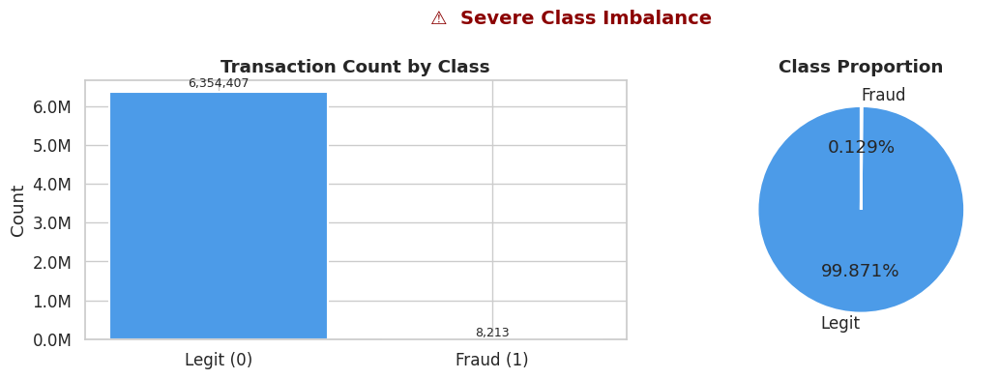
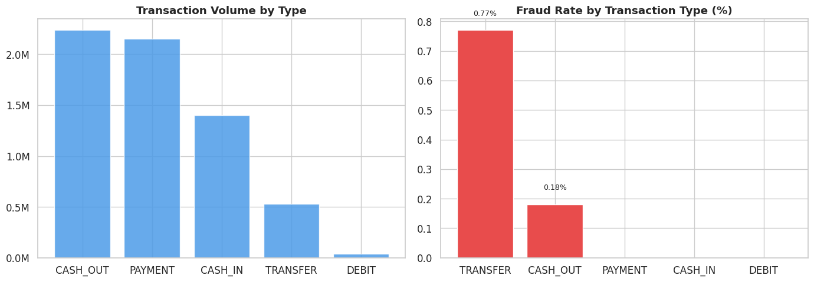
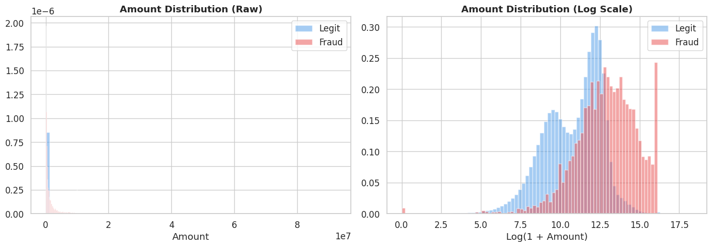
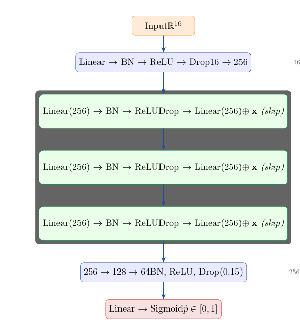
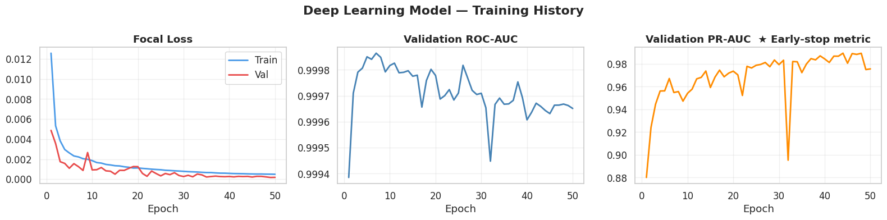
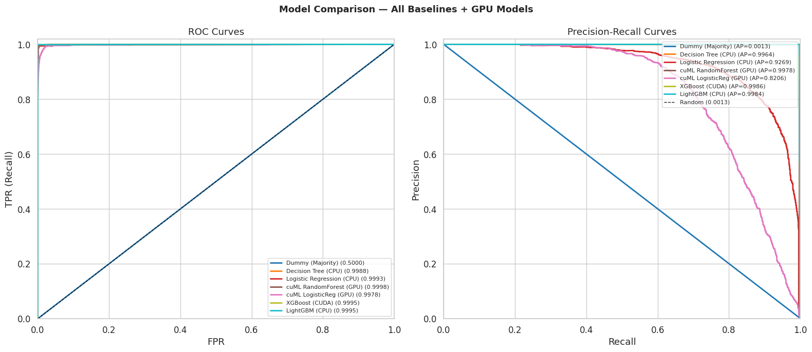

A production-ready deep learning system that detects fraudulent financial transactions in real time using a Residual Neural Network trained on 6.3 million+ transactions.
Fraud detection directly protects revenue, builds customer trust, and meets regulatory requirements.
Block fraudulent transactions before funds leave, saving millions in chargebacks and losses.
Real-time fraud alerts show the institution has customers' backs. Trust drives retention.
Active fraud monitoring with full audit trails and feature transparency per prediction.
Replace manual review with intelligent prioritization — analysts focus only on flagged cases.
Focal Loss dramatically reduces false alarms compared to rule-based systems.
Simple API handles millions of transactions. Deploy on CPU or GPU, scale horizontally.
Traditional rule-based systems miss sophisticated fraud. Deep learning catches patterns humans can't see.
Global digital payment fraud keeps escalating, making ML-powered detection critical.
Transactions must be classified in milliseconds. Delayed detection = completed fraud.
Fraudsters adapt constantly. Deep learning generalizes to novel patterns rule engines miss.
Only 0.129% of transactions are fraud. Standard classifiers fail — we use Focal Loss.
A synthetic dataset simulating real mobile money transactions from an African financial service over 30 days.



Raw fields are transformed into powerful fraud signals: balance anomalies, drain ratios, and transaction type indicators.
| Feature | Description | Type |
|---|---|---|
| step | Hour of simulation (1–744) | raw |
| type_enc | Integer encoding of transaction type (0–4) | derived |
| amount | Transaction amount | raw |
| oldbalanceOrg | Sender's opening balance | raw |
| newbalanceOrig | Sender's closing balance | raw |
| oldbalanceDest | Receiver's opening balance | raw |
| newbalanceDest | Receiver's closing balance | raw |
| isFlaggedFraud | System rule flag (catches <0.3% fraud) | raw |
| diffbalanceOrig | newbalanceOrig − oldbalanceOrg | derived |
| diffbalanceDest | newbalanceDest − oldbalanceDest | derived |
| errorBalanceOrig | |newOrig + amount − oldOrig| (accounting gap) | derived |
| errorBalanceDest | |oldDest + amount − newDest| (accounting gap) | derived |
| amount_ratio_orig | amount / (oldbalanceOrg + 1) — drain ratio | derived |
| orig_balance_zeroed | 1 if account drained to zero | derived |
| dest_is_merchant | 1 if destination starts with “M” | derived |
| is_risky_type | 1 if CASH_OUT or TRANSFER | derived |
10 linear layers · 3 skip-connected residual blocks · 256 hidden dim · Focal Loss · AdamW + OneCycleLR

Beyond binary fraud/legit — graduated risk tiers for real-world response strategies.
Probability ≥ 75%
Immediate block & review
Probability 50–74%
Flag for manual review
Probability 25–49%
Enhanced monitoring
Probability < 25%
Normal processing
Tuned on validation data to maximize PR-AUC, not accuracy.
High / Medium / Low based on distance from threshold.
All 16 features returned per prediction for audit trails.
Strong performance on a highly imbalanced dataset, benchmarked against XGBoost, LightGBM, Random Forest, and more.


One API call handles feature engineering, scaling, and inference automatically.
Lightweight Python web server with REST endpoints for prediction, health checks, and model metadata.
Dark-themed dashboard with quick-test cases, real-time gauges, and feature visualization.
Single .pt file: model weights, scaler params, threshold, and feature names — zero train/serve skew.
Four endpoints. Send a transaction, get a perdict. Production-ready with Gunicorn.
Critical lessons about real-world ML engineering that go beyond textbook knowledge.
Standard cross-entropy gives >99% accuracy catching zero fraud. Focal Loss + PR-AUC were essential. Accuracy is a trap.
errorBalanceOrig and amount_ratio_orig carried more signal than raw inputs. 8 derived features dramatically boosted detection.
Skip connections prevented gradient degradation and outperformed plain feed-forward architectures.
Optimal threshold depends on business cost trade-offs. We tuned it on the PR curve, not fixed at 0.5.
Saving scaler + features + threshold in one checkpoint eliminated train/serve skew entirely.
This project was designed and developed by the following team members.
Thank you!
FraudGuard — Real-Time Fraud Detection with Deep Learning